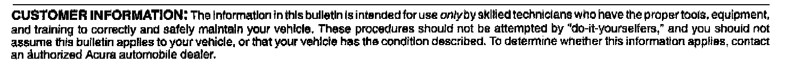

Body - Unibody Repair Guidelines
07-007February 2, 2007
Applies To:
ALL
Clarification of Acura Unibody Repair Policy
BACKGROUND
Acura automobiles and trucks are built to precise standards so that they can perform well under many situations. For example, they offer a firm responsive ride yet yield when necessary under the forces of a collision to help protect the vehicle occupants.
ACURA REPAIR POLICY
Sectioning Frame Components
When body repairs are necessary, Acura recommends that any repairs be performed by an experienced professional, using the Acura body repair manual, and that component replacement be accomplished along factory seams. Failure to do so can result in a number of problems, including improperly fitting parts, noises, tire wear, and most importantly, changes in vehicle dynamics and occupant protection in a subsequent crash.
In particular, Acura strongly recommends against the process of joining cut pieces from separate vehicles-commonly referred to as clipping. This is not an authorized Acura repair method. Any problem with other components resulting from such improper vehicle repairs is not covered under Acura's factory or extended warranties.
Also, because what's in a part is as important as how it looks, Acura strongly recommends the use of Acura Genuine repair parts. The material used to create the part, such as high-strength steel, and the subtle shapes of the part, determine how it will perform in normal operation or in a subsequent collision. Using Acura Genuine repair parts helps return the vehicle to its pre-crash condition.
ADHESIVES/WELDING
Using adhesives in place of welding for component replacement is not an authorized Acura repair method. It is important to repair at factory seams using the same procedure as the factory assembly process except where specified otherwise in the Acura body repair manual. The door skin is welded at the top and is glued around the crimp. Each body repair manual states that if the reinforcement in the door is damaged, the complete door must be replaced.
NOTE:
Because they are made of high-strength steel, door and bumper reinforcements must not be repaired or straightened.
INFORMATION RESOURCES
Extensive research and development goes into every Acura to provide safety for those inside as well as outside the vehicle. Therefore, it is critical that collision repair facilities do not change a vehicle during collision repair. Please visit the following websites for further information about Acura safety:
^ world.honda.com/safety, and
^ world.honda.com/news/2003/4030904_2.html
Body repair manuals are available for every new Acura model series that is sold in the U.S. Each manual provides instructions for proper repair procedures, and drawings that show where each factory seam and weld on the vehicle is located. In a few instances, the manual also indicates where it is acceptable to cut panels and sections other than at factory seams.
Body repair manuals can be purchased from Helm, Inc. using one of these methods:
^ Call Helm Inc. at 1-800-782-4356
^ Go online at www.helminc.com
Collision repair facilities can also subscribe to all manuals at www. serviceexpress.honda. corn.
Dealers can log onto ISIS and view body repair manuals in the Search By Publication section.

Disclaimer